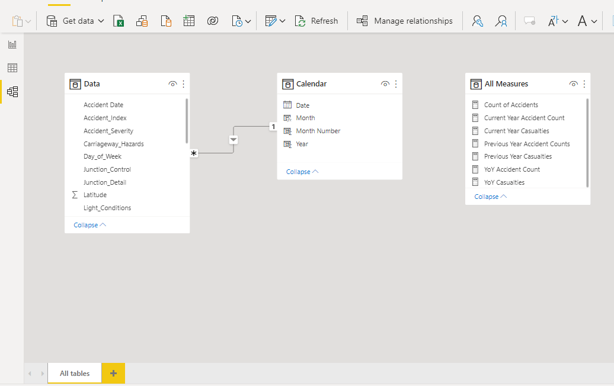

Home
Posts
About
UK Road Accidents and Casualties Tracking Dashboard (2021 - 2022)
Featuring data modeling in Power BI, and Dax
power bi
data visualisation
Author
Edun Joshua
Published
May 28, 2022
On this page
About The Project 🍪
Requirement Gathering
Identifying Stakeholders 🧑🏽💼
Understanding Raw Data 🥩
Data cleansing 🧹
Data Processing ⚙️
Data Modeling 🏛
Data Visualization 🎨
Deriving Insights
Contact
About The Project 🍪
</div> </section> <section id="requirement-gathering" class="level2"> <h2>Requirement Gathering</h2> <p>Client wants to create a dashboard on road accidents for the year 2021 and 2022.</p> <section id="a.-primary-kpis" class="level4"> <h4>a. Primary KPIs</h4> <ul> <li>Total Casualties and Total Accident Values: <ul> <li>Current Year</li> <li>Year-over-Year (YoY) Growth</li> </ul></li> <li>Total Casualties by Accident Severity: <ul> <li>Current Year</li> <li>Year-over-Year (YoY) Growth</li> </ul></li> </ul> </section> <section id="b.-secondary-kpis" class="level4"> <h4>b. Secondary KPIs</h4> <ul> <li><p>Total Casualties with Respect to Vehicle Type:</p> <ul> <li>Current Year</li> </ul></li> <li><p>Monthly Trend Comparison of Casualties:</p> <ul> <li>Current Year vs. Previous Year</li> </ul></li> <li><p>Casualties by Road Type:</p> <ul> <li>Current Year</li> </ul></li> <li><p>Current Year Casualties by Area/Location & Day/Night</p></li> <li><p>Total Casualties and Total Accidents by Location Total casualties and total accidents by location</p></li> </ul> </section> </section> <section id="identifying-stakeholders" class="level2"> <h2>Identifying Stakeholders 🧑🏽💼</h2> <ul> <li>Emergency Services Departments</li> <li>Road Safety Corps</li> <li>Traffic Management Agencies</li> <li>Police Force</li> <li>General public</li> </ul> </section> <section id="understanding-raw-data" class="level2"> <h2>Understanding Raw Data 🥩</h2> <p>Data Grain: A single instance of a reported accident event in the UK in 2021 and 2022</p> <table class="caption-top"> <colgroup> <col style="width: 31%" /> <col style="width: 68%" /> </colgroup> <thead> <tr class="header"> <th>Fields</th> <th>description (datatype)</th> </tr> </thead> <tbody> <tr class="odd"> <td>Accident_Index</td> <td>unique row identifier (string)</td> </tr> <tr class="even"> <td>Accident Date</td> <td>date of accident event (date)</td> </tr> <tr class="odd"> <td>Day_of_Week</td> <td>day of the week (string)</td> </tr> <tr class="even"> <td>Junction_Control</td> <td>mechanism of traffic control at junction (string)</td> </tr> <tr class="odd"> <td>Junction_Detail</td> <td>type of junction (string)</td> </tr> <tr class="even"> <td>Accident_Severity</td> <td>severity of accident (string)</td> </tr> <tr class="odd"> <td>Latitude</td> <td>latitude (float)</td> </tr> <tr class="even"> <td>Light_Conditions</td> <td>light conditions at accident scene (string)</td> </tr> <tr class="odd"> <td>Local_Authority_(District)</td> <td>name of district (string)</td> </tr> <tr class="even"> <td>Carriageway_Hazards</td> <td>hazards on the road if any</td> </tr> <tr class="odd"> <td>Number_of_Casualties</td> <td>number of causalities (integer)</td> </tr> <tr class="even"> <td>Number_of_Vehicles</td> <td>number of vehicles involved in the accident (integer)</td> </tr> <tr class="odd"> <td>Police_Force</td> <td>Police force jurisdiction (string)</td> </tr> <tr class="even"> <td>Road_Surface_Conditions</td> <td>condition of road surface (string)</td> </tr> <tr class="odd"> <td>Road_Type</td> <td>road type (string)</td> </tr> <tr class="even"> <td>Speed_limit</td> <td>road speed limit in mph (string)</td> </tr> <tr class="odd"> <td>Time</td> <td>time of day accident occurred (time)</td> </tr> <tr class="even"> <td>Urban_or_Rural_Area</td> <td>Whether accident occurred in an urban or rural area (string)</td> </tr> <tr class="odd"> <td>Weather_Conditions</td> <td>weather condition at time of accident (string)</td> </tr> <tr class="even"> <td>Vehicle_Type</td> <td>type of vehicle involved in the accident</td> </tr> </tbody> </table> </section> <section id="data-cleansing" class="level2"> <h2>Data cleansing 🧹</h2> <p>Issues - Junction_Control column has, among others, two values “Auto traffic sigl” and “Auto traffic signal” of which the former is a misspelling of the latter</p> <ul> <li><p>Instances where “Fatal” is misspelled as “Fetal” in Accident_Severity column</p></li> <li><p>“Time” column was represented as a datetime data type in Power BI</p></li> </ul> <p>Fixes - Used the Replace Values feature to correct the misspellings of Issues 1 & 2 - Changed the data type to time accordingly - All fixes were done in Power Query.</p> <section id="data-processing" class="level3"> <h3>Data Processing ⚙️</h3> <ul> <li><p>The data needs a calendar table so as to use Time Intelligence functions further down the line.</p></li> <li><p>Using the CALENDAR function, a new table with calculated, dynamic columns of Date, Month and Year was generated.</p></li> </ul> </section> <section id="data-modeling" class="level3"> <h3>Data Modeling 🏛</h3> <p>a one-to-many active relationship was established between the calendar table and the data table </p> </section> <section id="data-visualization" class="level3"> <h3>Data Visualization 🎨</h3> <ul> <li>Power BI magic!✨ The report pbix file is available in this repo to explore design decisions The following DAX measures were used:</li> </ul> <pre><code>Count of Accidents = DISTINCTCOUNT(Data[Accident_Index]) Current Year Accident Count = TOTALYTD(COUNT(Data[Accident_Index]),'Calendar'[Date]) Current Year Casualties = TOTALYTD(SUM(Data[Number_of_Casualties]),'Calendar'[Date]) Previous Year Accident Counts = CALCULATE(COUNT(Data[Accident_Index]), SAMEPERIODLASTYEAR('Calendar'[Date])) Previous Year Casualties = CALCULATE(SUM(Data[Number_of_Casualties]), SAMEPERIODLASTYEAR('Calendar'[Date])) YoY Accident Count = DIVIDE([Current Year Accident Count] - [Previous Year Accident Counts], [Previous Year Accident Counts]) YoY Casualties = (DIVIDE([Current Year Casualties] - [Previous Year Casualties],[Previous Year Casualties]))</code></pre> </section> <section id="deriving-insights" class="level3"> <h3>Deriving Insights</h3> <ul> <li><p>The vehicle type most involved in accidents was cars. This can be explained by the fact that most vehicles plying UK roads are cars</p></li> <li><p>There is a general decrease in casualty counts in 2022 compared to 2021</p></li> </ul> </section> </section> <section id="contact" class="level2"> <h2>Contact</h2> <p>Edun Joshua Olubori - <a href="https://www.linkedin.com/in/joshua-edun">connect on linkedin</a> - joshuaolubori@gmail.com</p> <p>Live Demo: <a href="https://app.powerbi.com/view?r=eyJrIjoiYjZiNDYwMTctY2EwOC00NGQ2LWJmOGEtMzVlN2I2YTFlZTEwIiwidCI6ImRmODY3OWNkLWE4MGUtNDVkOC05OWFjLWM4M2VkN2ZmOTVhMCJ9&embedImagePlaceholder=true">here</a></p> <div id="quarto-navigation-envelope" class="hidden"> <p><span class="hidden quarto-markdown-envelope-contents" data-render-id="quarto-int-sidebar-title">Chamber of (data) secrets</span> <span class="hidden quarto-markdown-envelope-contents" data-render-id="quarto-int-navbar-title">Chamber of (data) secrets</span> <span class="hidden quarto-markdown-envelope-contents" data-render-id="quarto-int-navbar:Home">Home</span> <span class="hidden quarto-markdown-envelope-contents" data-render-id="quarto-int-navbar:/index.html">/index.html</span> <span class="hidden quarto-markdown-envelope-contents" data-render-id="quarto-int-navbar:Posts">Posts</span> <span class="hidden quarto-markdown-envelope-contents" data-render-id="quarto-int-navbar:/posts_index.html">/posts_index.html</span> <span class="hidden quarto-markdown-envelope-contents" data-render-id="quarto-int-navbar:About">About</span> <span class="hidden quarto-markdown-envelope-contents" data-render-id="quarto-int-navbar:/about.html">/about.html</span></p> <div class="hidden quarto-markdown-envelope-contents" data-render-id="footer-left"> <p>Blog made with 💚 and <a href="https://quarto.org/">Quarto</a>, by Edun Joshua. License: <a href="https://creativecommons.org/licenses/by-sa/2.0/">CC BY-SA 2.0</a>.</p> </div> </div> <div id="quarto-meta-markdown" class="hidden"> <p><span class="hidden quarto-markdown-envelope-contents" data-render-id="quarto-metatitle">UK Road Accidents and Casualties Tracking Dashboard (2021 - 2022) – Chamber of (data) secrets</span> <span class="hidden quarto-markdown-envelope-contents" data-render-id="quarto-twittercardtitle">UK Road Accidents and Casualties Tracking Dashboard (2021 - 2022) – Chamber of (data) secrets</span> <span class="hidden quarto-markdown-envelope-contents" data-render-id="quarto-ogcardtitle">UK Road Accidents and Casualties Tracking Dashboard (2021 - 2022) – Chamber of (data) secrets</span> <span class="hidden quarto-markdown-envelope-contents" data-render-id="quarto-metasitename">Chamber of (data) secrets</span> <span class="hidden quarto-markdown-envelope-contents" data-render-id="quarto-twittercarddesc">Featuring data modeling in Power BI, and Dax</span> <span class="hidden quarto-markdown-envelope-contents" data-render-id="quarto-ogcardddesc">Featuring data modeling in Power BI, and Dax</span></p> </div> </section> </main> <!-- /main --> <script id = "quarto-html-after-body" type="application/javascript"> window.document.addEventListener("DOMContentLoaded", function (event) { const toggleBodyColorMode = (bsSheetEl) => { const mode = bsSheetEl.getAttribute("data-mode"); const bodyEl = window.document.querySelector("body"); if (mode === "dark") { bodyEl.classList.add("quarto-dark"); bodyEl.classList.remove("quarto-light"); } else { bodyEl.classList.add("quarto-light"); bodyEl.classList.remove("quarto-dark"); } } const toggleBodyColorPrimary = () => { const bsSheetEl = window.document.querySelector("link#quarto-bootstrap"); if (bsSheetEl) { toggleBodyColorMode(bsSheetEl); } } toggleBodyColorPrimary(); const icon = ""; const anchorJS = new window.AnchorJS(); anchorJS.options = { placement: 'right', icon: icon }; anchorJS.add('.anchored'); const isCodeAnnotation = (el) => { for (const clz of el.classList) { if (clz.startsWith('code-annotation-')) { return true; } } return false; } const onCopySuccess = function(e) { // button target const button = e.trigger; // don't keep focus button.blur(); // flash "checked" button.classList.add('code-copy-button-checked'); var currentTitle = button.getAttribute("title"); button.setAttribute("title", "Copied!"); let tooltip; if (window.bootstrap) { button.setAttribute("data-bs-toggle", "tooltip"); button.setAttribute("data-bs-placement", "left"); button.setAttribute("data-bs-title", "Copied!"); tooltip = new bootstrap.Tooltip(button, { trigger: "manual", customClass: "code-copy-button-tooltip", offset: [0, -8]}); tooltip.show(); } setTimeout(function() { if (tooltip) { tooltip.hide(); button.removeAttribute("data-bs-title"); button.removeAttribute("data-bs-toggle"); button.removeAttribute("data-bs-placement"); } button.setAttribute("title", currentTitle); button.classList.remove('code-copy-button-checked'); }, 1000); // clear code selection e.clearSelection(); } const getTextToCopy = function(trigger) { const codeEl = trigger.previousElementSibling.cloneNode(true); for (const childEl of codeEl.children) { if (isCodeAnnotation(childEl)) { childEl.remove(); } } return codeEl.innerText; } const clipboard = new window.ClipboardJS('.code-copy-button:not([data-in-quarto-modal])', { text: getTextToCopy }); clipboard.on('success', onCopySuccess); if (window.document.getElementById('quarto-embedded-source-code-modal')) { // For code content inside modals, clipBoardJS needs to be initialized with a container option // TODO: Check when it could be a function (https://github.com/zenorocha/clipboard.js/issues/860) const clipboardModal = new window.ClipboardJS('.code-copy-button[data-in-quarto-modal]', { text: getTextToCopy, container: window.document.getElementById('quarto-embedded-source-code-modal') }); clipboardModal.on('success', onCopySuccess); } var localhostRegex = new RegExp(/^(?:http|https):\/\/localhost\:?[0-9]*\//); var mailtoRegex = new RegExp(/^mailto:/); var filterRegex = new RegExp("https:\/\/joshuaolubori\.onrender\.com"); var isInternal = (href) => { return filterRegex.test(href) || localhostRegex.test(href) || mailtoRegex.test(href); } // Inspect non-navigation links and adorn them if external var links = window.document.querySelectorAll('a[href]:not(.nav-link):not(.navbar-brand):not(.toc-action):not(.sidebar-link):not(.sidebar-item-toggle):not(.pagination-link):not(.no-external):not([aria-hidden]):not(.dropdown-item):not(.quarto-navigation-tool):not(.about-link)'); for (var i=0; i<links.length; i++) { const link = links[i]; if (!isInternal(link.href)) { // undo the damage that might have been done by quarto-nav.js in the case of // links that we want to consider external if (link.dataset.originalHref !== undefined) { link.href = link.dataset.originalHref; } } } function tippyHover(el, contentFn, onTriggerFn, onUntriggerFn) { const config = { allowHTML: true, maxWidth: 500, delay: 100, arrow: false, appendTo: function(el) { return el.parentElement; }, interactive: true, interactiveBorder: 10, theme: 'quarto', placement: 'bottom-start', }; if (contentFn) { config.content = contentFn; } if (onTriggerFn) { config.onTrigger = onTriggerFn; } if (onUntriggerFn) { config.onUntrigger = onUntriggerFn; } window.tippy(el, config); } const noterefs = window.document.querySelectorAll('a[role="doc-noteref"]'); for (var i=0; i<noterefs.length; i++) { const ref = noterefs[i]; tippyHover(ref, function() { // use id or data attribute instead here let href = ref.getAttribute('data-footnote-href') || ref.getAttribute('href'); try { href = new URL(href).hash; } catch {} const id = href.replace(/^#\/?/, ""); const note = window.document.getElementById(id); if (note) { return note.innerHTML; } else { return ""; } }); } const xrefs = window.document.querySelectorAll('a.quarto-xref'); const processXRef = (id, note) => { // Strip column container classes const stripColumnClz = (el) => { el.classList.remove("page-full", "page-columns"); if (el.children) { for (const child of el.children) { stripColumnClz(child); } } } stripColumnClz(note) if (id === null || id.startsWith('sec-')) { // Special case sections, only their first couple elements const container = document.createElement("div"); if (note.children && note.children.length > 2) { container.appendChild(note.children[0].cloneNode(true)); for (let i = 1; i < note.children.length; i++) { const child = note.children[i]; if (child.tagName === "P" && child.innerText === "") { continue; } else { container.appendChild(child.cloneNode(true)); break; } } if (window.Quarto?.typesetMath) { window.Quarto.typesetMath(container); } return container.innerHTML } else { if (window.Quarto?.typesetMath) { window.Quarto.typesetMath(note); } return note.innerHTML; } } else { // Remove any anchor links if they are present const anchorLink = note.querySelector('a.anchorjs-link'); if (anchorLink) { anchorLink.remove(); } if (window.Quarto?.typesetMath) { window.Quarto.typesetMath(note); } // TODO in 1.5, we should make sure this works without a callout special case if (note.classList.contains("callout")) { return note.outerHTML; } else { return note.innerHTML; } } } for (var i=0; i<xrefs.length; i++) { const xref = xrefs[i]; tippyHover(xref, undefined, function(instance) { instance.disable(); let url = xref.getAttribute('href'); let hash = undefined; if (url.startsWith('#')) { hash = url; } else { try { hash = new URL(url).hash; } catch {} } if (hash) { const id = hash.replace(/^#\/?/, ""); const note = window.document.getElementById(id); if (note !== null) { try { const html = processXRef(id, note.cloneNode(true)); instance.setContent(html); } finally { instance.enable(); instance.show(); } } else { // See if we can fetch this fetch(url.split('#')[0]) .then(res => res.text()) .then(html => { const parser = new DOMParser(); const htmlDoc = parser.parseFromString(html, "text/html"); const note = htmlDoc.getElementById(id); if (note !== null) { const html = processXRef(id, note); instance.setContent(html); } }).finally(() => { instance.enable(); instance.show(); }); } } else { // See if we can fetch a full url (with no hash to target) // This is a special case and we should probably do some content thinning / targeting fetch(url) .then(res => res.text()) .then(html => { const parser = new DOMParser(); const htmlDoc = parser.parseFromString(html, "text/html"); const note = htmlDoc.querySelector('main.content'); if (note !== null) { // This should only happen for chapter cross references // (since there is no id in the URL) // remove the first header if (note.children.length > 0 && note.children[0].tagName === "HEADER") { note.children[0].remove(); } const html = processXRef(null, note); instance.setContent(html); } }).finally(() => { instance.enable(); instance.show(); }); } }, function(instance) { }); } let selectedAnnoteEl; const selectorForAnnotation = ( cell, annotation) => { let cellAttr = 'data-code-cell="' + cell + '"'; let lineAttr = 'data-code-annotation="' + annotation + '"'; const selector = 'span[' + cellAttr + '][' + lineAttr + ']'; return selector; } const selectCodeLines = (annoteEl) => { const doc = window.document; const targetCell = annoteEl.getAttribute("data-target-cell"); const targetAnnotation = annoteEl.getAttribute("data-target-annotation"); const annoteSpan = window.document.querySelector(selectorForAnnotation(targetCell, targetAnnotation)); const lines = annoteSpan.getAttribute("data-code-lines").split(","); const lineIds = lines.map((line) => { return targetCell + "-" + line; }) let top = null; let height = null; let parent = null; if (lineIds.length > 0) { //compute the position of the single el (top and bottom and make a div) const el = window.document.getElementById(lineIds[0]); top = el.offsetTop; height = el.offsetHeight; parent = el.parentElement.parentElement; if (lineIds.length > 1) { const lastEl = window.document.getElementById(lineIds[lineIds.length - 1]); const bottom = lastEl.offsetTop + lastEl.offsetHeight; height = bottom - top; } if (top !== null && height !== null && parent !== null) { // cook up a div (if necessary) and position it let div = window.document.getElementById("code-annotation-line-highlight"); if (div === null) { div = window.document.createElement("div"); div.setAttribute("id", "code-annotation-line-highlight"); div.style.position = 'absolute'; parent.appendChild(div); } div.style.top = top - 2 + "px"; div.style.height = height + 4 + "px"; div.style.left = 0; let gutterDiv = window.document.getElementById("code-annotation-line-highlight-gutter"); if (gutterDiv === null) { gutterDiv = window.document.createElement("div"); gutterDiv.setAttribute("id", "code-annotation-line-highlight-gutter"); gutterDiv.style.position = 'absolute'; const codeCell = window.document.getElementById(targetCell); const gutter = codeCell.querySelector('.code-annotation-gutter'); gutter.appendChild(gutterDiv); } gutterDiv.style.top = top - 2 + "px"; gutterDiv.style.height = height + 4 + "px"; } selectedAnnoteEl = annoteEl; } }; const unselectCodeLines = () => { const elementsIds = ["code-annotation-line-highlight", "code-annotation-line-highlight-gutter"]; elementsIds.forEach((elId) => { const div = window.document.getElementById(elId); if (div) { div.remove(); } }); selectedAnnoteEl = undefined; }; // Handle positioning of the toggle window.addEventListener( "resize", throttle(() => { elRect = undefined; if (selectedAnnoteEl) { selectCodeLines(selectedAnnoteEl); } }, 10) ); function throttle(fn, ms) { let throttle = false; let timer; return (...args) => { if(!throttle) { // first call gets through fn.apply(this, args); throttle = true; } else { // all the others get throttled if(timer) clearTimeout(timer); // cancel #2 timer = setTimeout(() => { fn.apply(this, args); timer = throttle = false; }, ms); } }; } // Attach click handler to the DT const annoteDls = window.document.querySelectorAll('dt[data-target-cell]'); for (const annoteDlNode of annoteDls) { annoteDlNode.addEventListener('click', (event) => { const clickedEl = event.target; if (clickedEl !== selectedAnnoteEl) { unselectCodeLines(); const activeEl = window.document.querySelector('dt[data-target-cell].code-annotation-active'); if (activeEl) { activeEl.classList.remove('code-annotation-active'); } selectCodeLines(clickedEl); clickedEl.classList.add('code-annotation-active'); } else { // Unselect the line unselectCodeLines(); clickedEl.classList.remove('code-annotation-active'); } }); } const findCites = (el) => { const parentEl = el.parentElement; if (parentEl) { const cites = parentEl.dataset.cites; if (cites) { return { el, cites: cites.split(' ') }; } else { return findCites(el.parentElement) } } else { return undefined; } }; var bibliorefs = window.document.querySelectorAll('a[role="doc-biblioref"]'); for (var i=0; i<bibliorefs.length; i++) { const ref = bibliorefs[i]; const citeInfo = findCites(ref); if (citeInfo) { tippyHover(citeInfo.el, function() { var popup = window.document.createElement('div'); citeInfo.cites.forEach(function(cite) { var citeDiv = window.document.createElement('div'); citeDiv.classList.add('hanging-indent'); citeDiv.classList.add('csl-entry'); var biblioDiv = window.document.getElementById('ref-' + cite); if (biblioDiv) { citeDiv.innerHTML = biblioDiv.innerHTML; } popup.appendChild(citeDiv); }); return popup.innerHTML; }); } } }); </script> <script src="https://giscus.app/client.js" data-repo="JoshuaOlubori/qblog" data-repo-id="R_kgDOKvhXew" data-category="General" data-category-id="DIC_kwDOKvhXe84CbFeH" data-mapping="title" data-reactions-enabled="1" data-emit-metadata="0" data-input-position="top" data-theme="light" data-lang="en" crossorigin="anonymous" async> </script> <input type="hidden" id="giscus-base-theme" value="light"> <input type="hidden" id="giscus-alt-theme" value="dark"> </div> <!-- /content --> <footer class="footer"> <div class="nav-footer"> <div class="nav-footer-left"> <div class='footer-contents'>Blog made with 💚 and [Quarto](https://quarto.org/), by Edun Joshua. License: [CC BY-SA 2.0](https://creativecommons.org/licenses/by-sa/2.0/).</div> </div> <div class="nav-footer-center"> </div> <div class="nav-footer-right"> </div> </div> </footer> </body> </html>